Take a virtual tour of our office, clinic, dog runs, cattery and other facilities and see for yourself our life saving work of educating the public on animal welfare and giving neglected and abused animals a second chance in life.
Office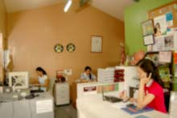This is the first stop for all volunteers and visitors. Adoption applicants get interviewed here. |
Animal Count Board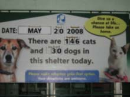Located at the side of the office, this shows the number of animals currently being cared for at the shelter |
Muriel Jay Multi-purpose Hall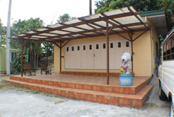Named after PAWS's founder Muriel Jay, the multi-purpose hall serves as a venue for humane education, seminars and meetings. Volunteers, students and visitors gather here to be oriented on animal welfare in general, PAWS’ mission and vision and how working together could make a difference in the lives of animals. |
Feline Quarantine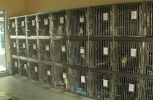Newly admitted cats and kittens are kept in this area for observation until they are cleared for admission to the kittenery, or for spay/neuter surgery before moving to the cattery . They usually stay here for about two weeks, dewormed and given supplements in preparation to shelter life. If a cat or kitten is diagnosed with an infectious disease, an immediate transfer to the Feline Sick Bay is made. |
Cattery and Kittenery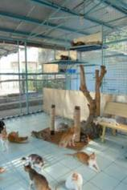All cats who passed the quarantine period and already spayed/neutered and vaccinated against rabies are kept in this area. A special feature of this cattery & kittenery is the "catwalk", a small connecting bridge between the indoor and the outdoor cattery, where felines can relax, feel the air and enjoy the sun. It is also in the outdoor cattery where visitors and potential adopters can experience "cat heaven" while interacting with our friendly felines. |
Clinic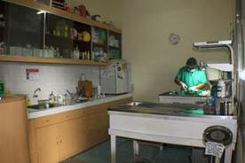Shelter animals are spayed and/or neutered here. Spaying is a general term used to describe the ovariohysterectomy of a female animal. Neutering is a general term used to describe the castration of a male animal. Both simple surgical procedures, performed by a veterinarian render an animal incapable of reproducing. PAWS offers low-cost spaying and neutering , consultation and vaccination of pets to the public to provide indigent pet owners a more affordable option in comparison to private veterinarians and clinics. |
Intensive Care / Observation Ward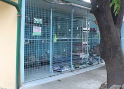Located in close proximity to the clinic, the Intensive Care or Observation Ward is for animals with non-contagious health problems that need close observation by the shelter veterinarian and/or animal care staff or volunteers. Animals which need further monitoring, those recovering from surgery and/or undergoing treatment are also placed in this area. |
Doggie Park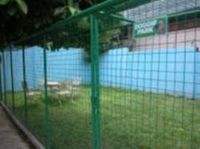An off-leash socialization area for dogs. The fenced ‘mini-park’ provides a fun and safe exercise location for dogs who are too aggressive or wary with other PARC animals. It is also a place where potential adopters can bond with the dog of their choice. |
Dog Runs 1 and 2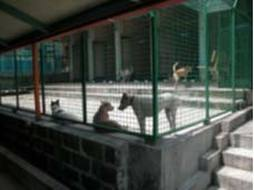Dogs that have been spayed, neutered and completely vaccinated are placed here. This section is designed to provide sufficient room for walking, running and playing, with a number of closed-off kennels to allow gradual introduction of new canines after transfer from the quarantine. All dogs that are transferred to the dog run are sociable and ready for adoption. |
Feline Sick Bay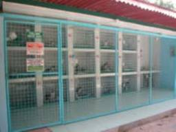A strictly off-limits area designated for cats and kittens diagnosed with highly infectious diseases, after observation and evaluation by the shelter veterinarian. Such cats are to stay in the sick bay until cleared to be spayed, neutered, or released into the cattery after extensive treatment. Volunteers are restricted from this section to prevent spreading diseases unless given permission. |
Feline Special Needs Ward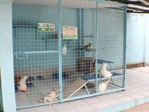This area is specifically constructed for aged and specialneeds cats. Separation from the general feline population avoids unfair food competition and enables staff and volunteers to identify which cats are to be provided special care and maintenance. |
Canine Quarantine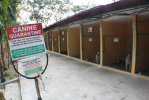Newly admitted dogs and puppies are kept in preventative isolation until they are cleared for spay/neuter or release into the dog run. Initial treatment of diseases and vaccinations are performed in this section by the veterinarian. Volunteers and visitors are not allowed to take dogs or puppies from the quarantine, as they are yet to be evaluated for physical and psychological wellness. |
Recovery Cages and Isolation Kennels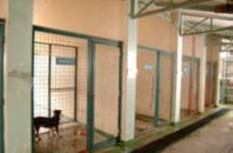Located at the back of the Dog Run, these areas are constructed to provide a closed-off section for dogs recovering from spay/neuter surgery, and rooms for highly aggressive dogs still undergoing regular behavioral modification training. |
People Park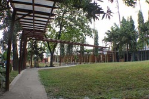The grassed areas of the PARC dedicated for socialization and interactions among volunteers, visitors and the shelter animals. Dogs that have been fully vaccinated and are ready for adoption may be walked and played with in these areas, giving both humans and animals a relaxed atmosphere for bonding and fun. |
Ampitheater Garden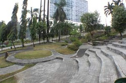Sponsored by the International School of Manila, this area is used for dog walking, exercise and training. The greenery provides a relaxing venue for canine and human socialization. |
Memorial Wall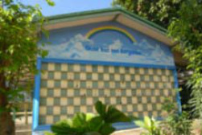Owners of deceased pets may avail of a dedicatory tile designed with messages for their departed companions. While it is built for the memory of a departed pet, is not a columbarium to keep the cremated remains nor a place to bury the deceased animals. This project is also meant to raise funds for the shelter as each tile (dimensions: 20x30 cm) costs Php 2,500 (approx. $58) inclusive of a four-line dedication with layout provided by PAWS (for approval by tile owner). |